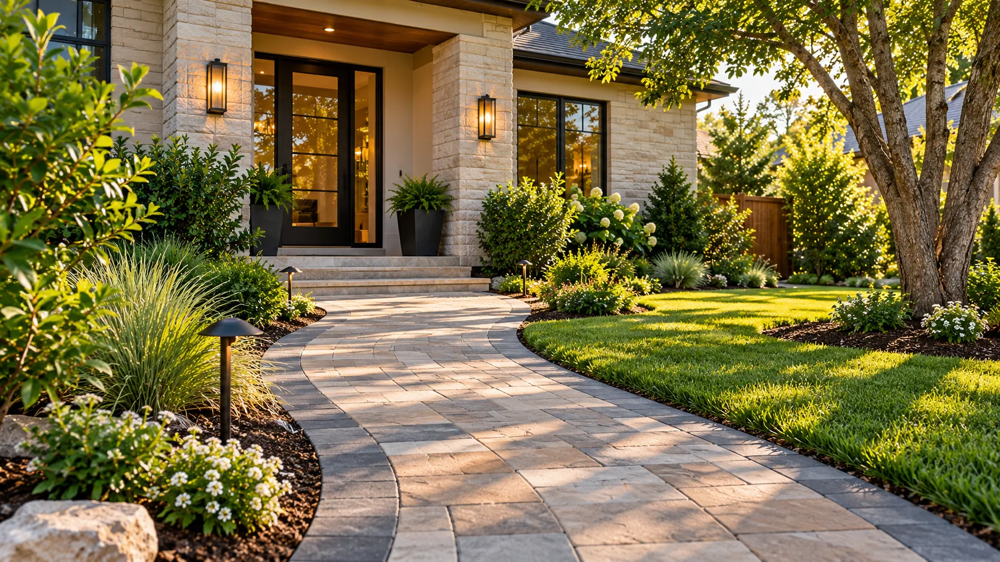
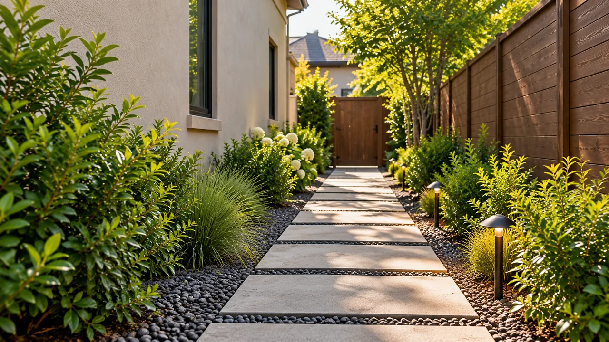
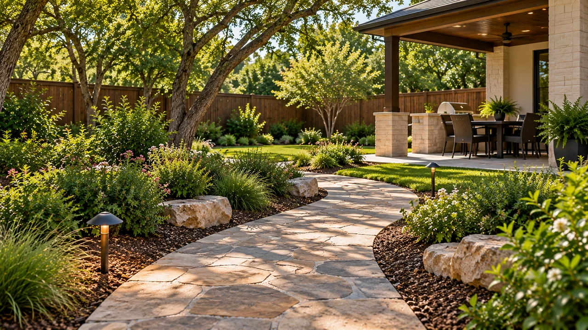
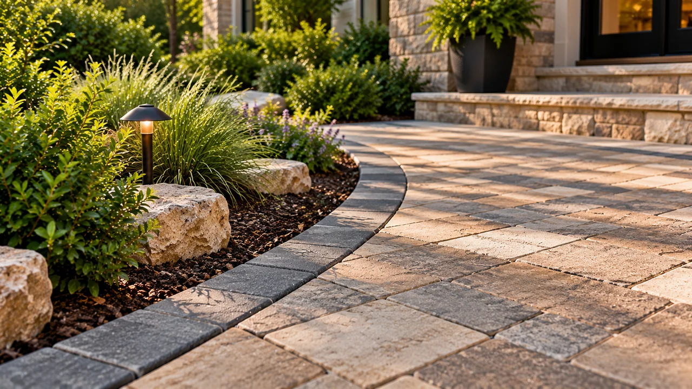

01
A Route That Fits Your Routine
Connect the driveway to the front door, move more easily along the side of your home, or create a clear path between outdoor living areas. Begin with how the route will be used.
Make the everyday path through your yard feel intentional. Whether you're planning a welcoming front entry, a side-yard route, or a connection to your backyard, Pro Green Landscape Solutions helps you plan a walkway around your layout, surface preferences and drainage considerations.
DESIGNED FOR EVERYDAY LIVING
A well-planned walkway gives people a more defined route between the places they use every day. The layout should also make sense with the shape and conditions of your property.
Connect the driveway to the front door, move more easily along the side of your home, or create a clear path between outdoor living areas. Begin with how the route will be used.
From clean pavers to a natural stone look, surface and finish choices help your walkway complement the house and surrounding landscape. Exact options depend on your project.
Slope, runoff and areas where water collects can affect the position and finish of a walkway. Talk through these concerns before choosing a final layout.
Borders and meeting points help connect a new path to the lawn, garden beds, driveway or patio and create a more finished appearance.
THE RIGHT PATH FOR YOUR SPACE
Not every path serves the same purpose. Tell us what it needs to connect so we can discuss the right layout.
Talk About My Walkway
Create a welcoming approach from your driveway or sidewalk to the front door, planned around steps, planting beds and available space.

Define a practical route between the front and back of the home, side gates, storage areas or outdoor utilities.

Link patios, gardens and gathering areas with a walkway that follows how you move through the yard.
Illustrative visuals. Not photographs of completed ProGreen projects.
A PLAN THAT FITS YOUR PROPERTY
A useful path starts with a conversation about your property.
Which spaces should the walkway connect? Who will use it, and how much space would feel comfortable for that route?
Low spots, slopes and drainage patterns can influence where the walkway should sit and how it meets existing outdoor surfaces.
Consider the style of your home, how you'll use the path and how its edges will meet grass, mulch, planting beds or patios.

CHOOSING THE RIGHT SURFACE
The surface you choose affects appearance, everyday comfort and maintenance. Pro Green's published walkway guidance discusses pavers, natural stone and other hardscape considerations. Ask which options are appropriate for your property.
Pavers offer an orderly finished look with choices in color, shape, pattern and border treatment. Discuss which options are appropriate for your walkway's use.
Stone paths can create an organic look within landscaping. Surface texture, spacing and the surrounding setting help guide the material discussion.
A walkway includes more than the surface. Consider how edging, path elevation and meeting points will work with the rest of your yard.
YOUR PROJECT, YOUR SPACE
Pro Green Landscape Solutions provides walkway and hardscaping services in the Austin area. Its service guidance considers sun, grade, soil movement, drainage, material choice and everyday use. If you're planning a more defined route through your outdoor space, start with the property details and your goals.
SIMPLE STEPS TO GET STARTED
Share the area you want to connect and a few details about your property.
Talk through the proposed route, surface preferences, grade and any questions about your space.
Once the project scope is understood, discuss the quote and potential scheduling with the Pro Green team.
AUTHENTIC WORK ONLY
Project images will be shown here only after ProGreen supplies authentic walkway photographs and approves their use.
CUSTOMER EXPERIENCES
Space reserved for genuine customer feedback with approval and accurate attribution.
No ratings or testimonials have been fabricated.LOCAL WALKWAY INSTALLATION
Pro Green Landscape Solutions serves Austin, Round Rock, Cedar Park and surrounding Central Texas communities, including Georgetown and Leander. Tell us where your walkway project is located so the team can confirm service availability.
YOUR QUESTIONS, ANSWERED
Planning a walkway in the Austin area? These are common questions to consider before you request a quote.
Ask about front-entry, side-yard and backyard paths, including routes between driveways, patios, garden areas and other outdoor spaces. Describe how you want to use the path.
Consider the look you want, how the walkway will be used, maintenance preferences, texture and site conditions. The options that make sense depend on your property and available materials.
Mention low spots, standing water or a grade change when you request a quote. These factors should be considered when discussing a possible walkway layout.
Length, shape, material, access and site preparation can affect a project quote. Request a free quote for your specific walkway rather than relying on a generic price.
Timing depends on the project scope, materials, weather, site conditions and scheduling. Ask the team for a project-specific timeline once details are known.
Pro Green includes these communities in its Austin-area service information. Include your location so the team can confirm availability for your property.
No. Start with the areas you need to connect and the appearance you prefer. Discuss surface and layout options as part of the project conversation.
YOUR NEXT WALKWAY STARTS HERE
Whether you've selected a surface or you're still comparing ideas, the first step is explaining where you'd like your walkway to go. Tell Pro Green about your Austin-area project and request a free quote.
Call for a Free Quote · (512) 890-2716